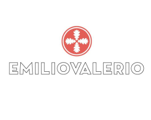

BODEGAS EMILIO VALERIO | Laderas de Montejurra
Emilio Valerio - Laderas de Montejurra es una bodega familiar caracterizada por defender la biodiversidad de los valles de Montejurra, practicar la agricultura biodinámica y elaborar vinos de calidad en las laderas sur de Montejurra, con más de 50 pequeñas parcelas en la subzona Tierra Estella.
En el viñedo se practica una agricultura tradicional, artesana y escasamente mecanizada, con vendimias manuales, sin uso de pesticidas ni herbicidas desde hace más de quince años, y aplicando tratamientos biodinámicos. En bodega, los trabajos son muy simples, vinificando cada viñedo por separado en depósitos de hormigón o tinos de madera, y criando los vinos únicamente en roble francés, con muy poca madera nueva.